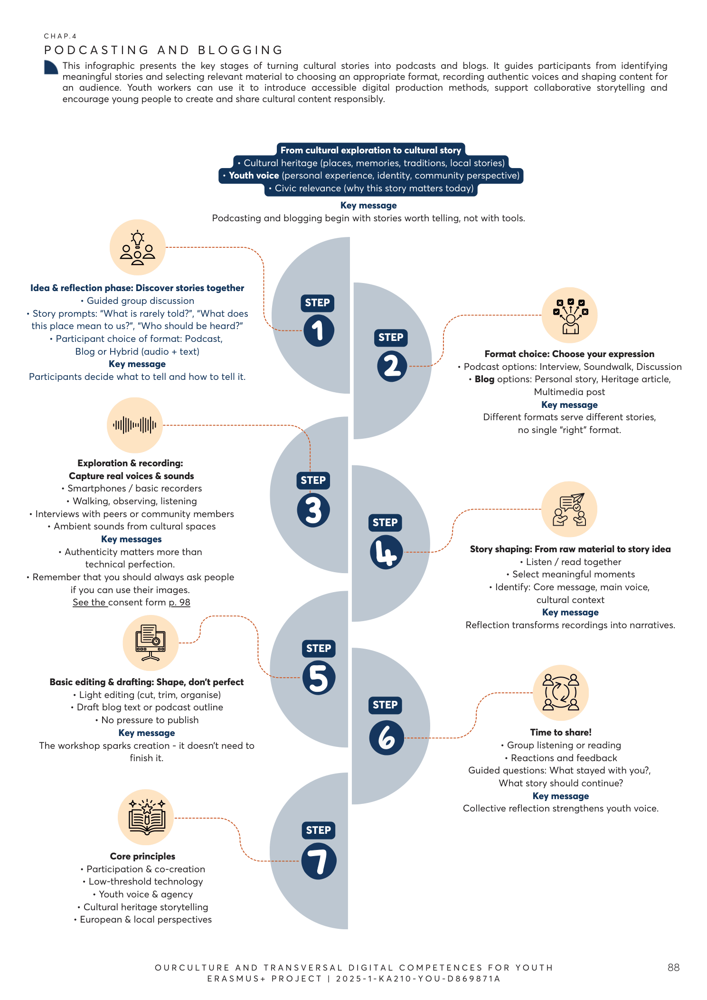
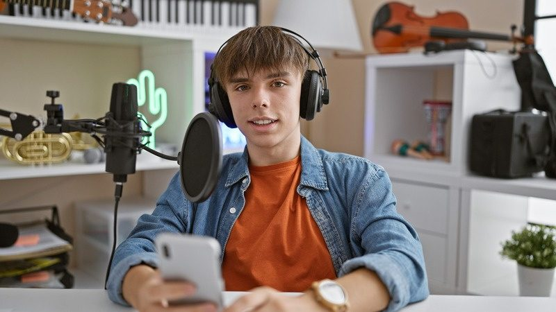
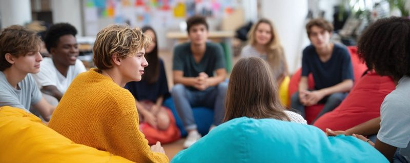
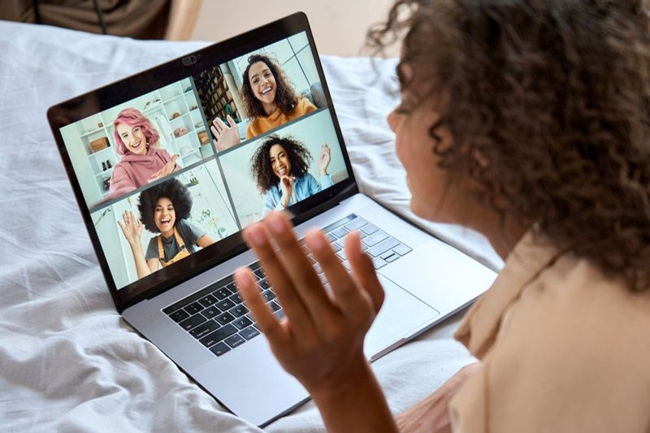
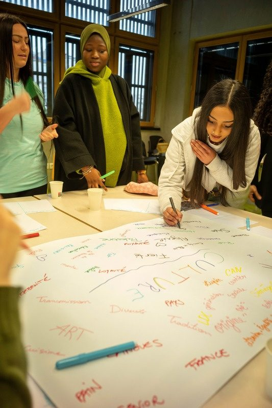

I N F O G R A P H I C S U M M A R Y

Visual summary of this chapter — click to enlarge or download.
Download infographic (PDF)Introduction

This chapter introduces podcasting and blogging as digital storytelling tools that youth workers can use to engage young people with cultural heritage, civic participation and creative expression. Through accessible technologies and participatory methods, young participants learn how to capture stories, document cultural experiences and share narratives with wider audiences.
Building on the storytelling work developed in Chapter 3, this chapter moves from structured cultural narratives to concrete media production and responsible sharing, using podcasts and blogs as accessible tools to bring those stories to life.
DigComp 3.0 connection
This chapter mainly supports Digital content creation and Communication and collaboration, helping young people create, adapt and share digital cultural content responsibly.

Learning objectives
By the end of this chapter, youth workers will be able to:
- understand the role of podcasts and blogs in youth civic participation and cultural storytelling
- introduce basic technical foundations of podcasting and blogging
- facilitate creative workshops where young people produce audio or written cultural stories
- support youth in documenting cultural heritage through interviews, sound recording and storytelling
- connect digital youth work with cultural heritage engagement and community dialogue.
Sections
- Section 1 | Digital expression & youth voice
- Section 2 | Technical foundations
- Section 3 | Practical tools & activities
- Section 4 | Case studies & best practices
Section 1 · Digital expression & youth voice
Digital expression & youth voice
Why use podcasts and blogs in youth work?
Because they give young people a simple way to share stories, ideas and experiences. Podcasts and blogs offer practical ways for young people to produce and share stories using accessible digital tools. Unlike earlier stages of storytelling (see Chapter 3), these formats focus on recording voices, structuring content for publication, and reaching audiences.
Podcasts are particularly engaging because they are based on conversation and storytelling. Young people can interview others, document local places, or discuss issues that matter to them. Across Europe, several youth projects have used podcasting to strengthen digital skills while encouraging participation in community life and democratic dialogue. Blogs complement podcasts by offering a space for written reflection and multimedia storytelling. Through blog posts, young people can document cultural traditions, share personal perspectives, and preserve community memories.
Creating podcasts or blogs also helps develop important skills. Participants learn how to organise information, shape narratives, listen carefully to others and communicate responsibly in public spaces. For youth workers, these tools offer a practical way to combine digital youth work, storytelling and cultural heritage exploration, while encouraging young people to become active voices in their communities.
Relevance for Ourculture
For the Ourculture project, this information underscores the power of podcasts and blogs as tools for cultural heritage engagement and youth participation. By facilitating hands-on podcast and blogging activities, the project does more than teach technical skills; it fosters a generation of young storytellers who can capture, interpret, and share cultural narratives. It enhances the quality and innovation of youth work by integrating digital platforms into creative, participatory learning, and it reinforces the role of digital youth work in enabling young people to become not just consumers of media, but producers of culture and civic dialogue.
Section 2 · Technical foundations
The technical elements presented here are not meant for mastery, but to support simple, accessible media production, building on stories already developed (see Chapter 3).
To effectively facilitate podcasting and blogging workshops for young people, it is essential to establish a solid set of technical foundations that are accessible, adaptable, and aligned with the goals of digital youth work. While creativity and expression remain central, practical technical skills help participants turn ideas into concrete, shareable content.
2.1.From story to format: Preparing for production
Before using tools, participants benefit from a simple conceptual foundation:
- Podcast formats: interview, storytelling, discussion, documentary
- Blog formats: personal stories, reflections, multimedia posts, themed series
- Audience awareness: who is this for? What do you want them to feel or learn?
Planning basics: write a few key points before recording or writing This step helps participants translate existing story ideas into formats ready for recording or publication.
2.2.Recording basics and equipment
Good audio quality does not require expensive equipment-simple tools and mindful use are enough. This is also an opportunity to introduce sustainable and responsible practices.
- Use what you already have: smartphones, basic headphones with a microphone, or shared devices
- Avoid unnecessary purchases: prioritise reuse, borrowing, or low-cost equipment
- Choose a quiet space: reduce background noise instead of relying on editing later
- Speak clearly and steadily: stay at a consistent distance (about a hand span from the mic)
- Keep the microphone stable: avoid handling noise or movement during recording
- Test before recording: record a short sample and listen back
- Use compressed formats when possible: smaller files are easier to store and share
- Backup wisely: keep essential files, but avoid unnecessary copies
- Share responsibly: upload only final or useful versions
Recording environment is essential to how your content is perceived: good sound quality is often more important than image quality, as audiences are less tolerant of poor audio. Always prioritise quiet spaces, reduce background noise (traffic, voices, wind), and avoid echo when possible, as these are difficult to fix later.
Microphone positioning also plays a key role: keep the microphone at a consistent, close distance (about a hand span), speak clearly and at a steady pace, and avoid sudden movements, touching the mic, or speaking too loudly or too softly. Familiarity with tools empowers participants to experiment confidently. For youth workshops, coordinators can prioritise simplicity: using tools participants already own (like phones) ensures low entry barriers and inclusivity.
Producing with intention is a key principle of this chapter. Participants are encouraged to record only what is meaningful, avoid unnecessary data production, and focus on quality rather than quantity. This approach reflects the principle introduced in Chapter 3 - “Record Less, Tell Better” - and supports more sustainable and thoughtful media practices.
2.3.Software and platforms
To transform raw recordings into shareable content, participants need access to basic software. Audio editing tools: free solutions like Audacity, GarageBand, or web-based editors for trimming, cleaning, and combining clips. Blogging platforms: WordPress, Blogger, Medium, or similar CMS that are free and user-friendly. Hosting and distribution: understanding how podcasts are published (RSS feeds, anchor sites) and how blogs are updated and shared. Introducing these platforms with a simple demo and guided exploration helps reduce technology anxiety and strengthens digital agency. It is also valuable to connect participants with local resources that already support media creation. Youth centres, community radios, school media labs, or local associations often provide access to equipment, recording spaces, or publishing platforms. Collaborating with these structures (like youth centre web radios or local digital hubs) allows young people to experiment in real contexts, receive guidance from practitioners, and see how their content can reach real audiences. For youth workers, building partnerships with these local actors strengthens support networks and makes projects more sustainable and impactful.

2.4.Storytelling and narrative structure tools
Technical skills should support storytelling (see Chapter 3 for a deeper exploration of narrative structures and creative approaches). In this section, the focus is on how to technically organise and edit content so that the story is clear and engaging.
- Storyboards (audio or visual): simple step-by-step planning of scenes or sequences (intro, main content, ending)
- Interview and script guides: short prompts to structure recordings and avoid missing key points
For good interview practices, there’s a practical checklist to follow for each phase:
- Prepare 4–6 open-ended questions (avoid yes/no questions)
- Start with easy, comfortable questions before deeper topics
- Be polite and create a safe, respectful atmosphere
- Listen actively: stay silent and let the person finish speaking
- Do not interrupt; allow pauses (they often lead to richer answers)
- Follow up: ask “why?”, “how?”, “can you give an example?”
- Keep eye contact and show interest (nod, react naturally)
- Record in a quiet space and check sound before starting
- Thank the person and close the interview clearly
- Scripting exercises can guide participants in structuring content logically and engagingly. For blogs, integrating images, maps, quotations, and hyperlinks fosters multimodal literacy.
2.5.Collaboration and workflow
Podcasting and blogging are typically collaborative activities that require coordination among participants. Establishing a clear workflow helps ensure efficient teamwork and smooth content production. Using a shared online folder for project materials-such as audio recordings, written texts, and images- facilitates collective access and organisation. Clear file naming conventions help participants easily identify and locate materials. To avoid version conflicts, it is advisable that only one person edits a file at a time while others review the most recent version. Maintaining version history rather than deleting earlier drafts allows teams to track changes and preserve previous work. Regular sharing of drafts within the group also supports collaborative reflection and constructive feedback throughout the production process.
2.6.Ethical & accessibility considerations
Content creation in podcasts and blogs involves responsibility toward the people, stories, and communities represented. Ethical considerations should therefore guide the entire production process. Permission should be obtained before recording or publishing interviews, voices, or personal stories, and participants should be informed about where and how the content may be shared. The use of respectful and inclusive language is essential to ensure that narratives represent individuals and communities responsibly.
European references to ask for permission before publishing participants’ materials:
- The General Data Protection Regulation (GDPR) sets rules on collecting, storing, and sharing personal data
- National youth work and education guidelines often complement GDPR with specific rules for minors
- Basic principle: collect only what is necessary, store it securely, and use it transparently
Providing a simple consent form template adapted to your activity is strongly recommended, helping youth workers ensure both ethical and legal compliance while protecting participants. When incorporating music, images, or other media, preference should be given to free or open-licensed materials, with appropriate attribution to the original creators. Accessibility is also an important aspect of responsible media production.
Clear audio recording, understandable speech, and well-structured text contribute to making content accessible to a broader audience.
How this matters for Ourculture
For the Ourculture project, focused on cultural heritage, quality in youth work, innovation, and digital youth work, these technical foundations are crucial. They ensure that participants are not only creative but capable of realising and sharing narratives that matter. The combination of accessible tools, structured workflows, and narrative scaffolding empowers young people to contribute cultural heritage content that resonates locally and beyond. By demystifying technology and situating it within a creative and civic purpose, the project situates youth digital expression at the intersection of heritage preservation, democratic participation, and community storytelling, aligning with Erasmus+ values and producing outputs that can continue to evolve after the pilot activities conclude.
At the same time, producing podcasts and blogs involves public communication and representation. These activities invite young people to reflect on responsibility, ethical storytelling, and respectful dialogue in digital spaces. They should also be encouraged to consider the power of images and media in shaping perceptions, and the importance of representing people and situations accurately. Grounding content in real experiences, fieldwork, and authentic voices helps ensure that stories remain meaningful, credible, and respectful. These dimensions connect directly with the principles of digital citizenship, which are explored further in Chapter 5.
Section 3 · Practical tools & Activities
Collecting information about culture
These activities are designed for young people and can be adapted to different European youth-work contexts. They support the use of podcasting and blogging as tools for cultural heritage storytelling, civic participation and creative expression. It builds on the exploration methods introduced in Chapter 2 (observation, interviews, fieldwork). Here, these approaches are used with a new objective: capturing and transforming material into podcast and blog content.

Section 4 · Case studies & best practices
Successful case studies in Hungary
Before testing the suggested activities, the following case studies help give useful context. They show how similar activities worked in real situations in the Hungarian background, describing what challenges appeared and what results were achieved. These examples are proof that cultural initiatives funded by Erasmus+ projects can change the reality of many youngsters, discuss real- life problems and become a success on a national and international level.
4.1. Case study 1 - The voice of youth
Erasmus+ Youth Journalism Project
Project overview:
The Voice of Youth is an Erasmus+ co-funded project involving partners from Hungary, Ireland and Estonia, focused on empowering young people as journalists and media creators. The initiative aims to help young participants build media literacy and content production skills - including writing, blogging, audio/video creation, digital storytelling and critical thinking - so they can express themselves and contribute to community dialogue.
Objectives and activities:
- Equip young people (15–30) with journalistic competencies, including ethical reporting, critical evaluation of media and content design.
- Develop a multilingual online platform providing interactive lessons, worksheets and evaluation tools to support learning.
- Facilitate transnational workshops and meet-ups, such as joint sessions in Dublin, where Hungarian participants collaborate with peers from partner countries to review and refine media outputs.
- Produce co-created content with youth voices embedded, including blog posts, interviews, opinion pieces and journalistic media.
Content and methodological approach
The project combines media education with experiential learning, allowing young participants to develop journalistic skills through practice.
Workshops introduce the fundamentals of journalism, including story selection, ethical reporting, fact-checking and narrative construction. Participants explore different media formats such as blog articles, interviews, podcasts and short videos, learning how to adapt stories to different digital platforms. The methodology is based on participatory learning and collaboration. Young people work in teams to research topics, conduct interviews and produce media content related to social issues, culture and community life.
International workshops create opportunities for intercultural exchange, where participants review each other’s work and reflect on different perspectives in storytelling. Digital tools support the learning process through an online platform containing training materials, exercises and evaluation tools. This blended approach - combining workshops, online learning and collaborative production - encourages active engagement and allows participants to learn by doing while developing critical awareness of how media shapes public narratives.
Target group
- Young people aged 15–30 interested in media, storytelling and digital content creation
- Youth with limited access to media literacy education or journalism training
- Young people motivated to express community issues, social topics or cultural experiences
- Participants involved in youth organisations, schools or informal learning programmes
- Youth from different European backgrounds, encouraging intercultural collaboration and exchange
Key digital & media literacy elements
- Understanding the principles of responsible journalism, including ethical reporting and verification of information
- Developing critical media literacy, such as analysing bias, credibility and representation in media
- Learning digital storytelling techniques through blogs, interviews, podcasts and multimedia content
- Using digital tools and online platforms to publish, share and collaborate on media projects
- Practising responsible online communication and respectful representation of communities and cultures. Strengthening collaborative production skills, including peer feedback and editorial teamwork
Impact
The project helped young participants gain confidence in expressing their ideas through media and storytelling. By producing blogs, interviews and multimedia content, they developed practical digital and journalistic skills while reflecting on community issues and cultural perspectives. The project also strengthened collaboration between young people from different countries, encouraging intercultural dialogue and active participation in public discussions.
Why it matters:
This project demonstrates how media and digital media literacy can be directly incorporated into structured youth work programmes under Erasmus+. By fostering critical thinking alongside practical media skills, The Voice of Youth illustrates how young people gain agency to represent their communities and interpret cultural narratives for broader audiences. The project combines both digital youth work and creative civic participation, aligning closely with the aims of cultural heritage storytelling and youth expression.

4.2. Case study 2 - Mustár FM: Youth Radio & Audio Media
Project overview:
Mustár FM is a community youth radio station based in Nyíregyháza, Hungary, that regularly hosts European Solidarity Corps volunteers. Through ESC placements, young people from different European countries are actively involved in audio media production, including radio programmes, interviews, cultural storytelling, and community-oriented broadcasts. The initiative uses radio and audio formats as tools for youth expression, intercultural learning, and civic participation.
Objectives and activities:
- Engage young volunteers in audio content creation, including hosting radio shows, recording interviews, and producing thematic programmes related to culture, language, and youth issues.
- Develop practical skills in storytelling, communication, and audio production through hands-on participation rather than formal training.
- Encourage intercultural exchange, with volunteers sharing stories from their countries of origin while engaging with local Hungarian culture and community life.
- Support youth-led initiatives where volunteers design and deliver their own programme concepts with guidance from local mentors.
Activities and outputs:
- Regular radio broadcasts produced or co-produced by young volunteers.
- Audio interviews and discussions focusing on cultural identity, European diversity, and local community topics.
- Informal learning processes that allow volunteers to gradually build confidence in speaking, recording, and storytelling.
Content and methodological approach
Mustár FM uses community radio as a practical learning environment where young people develop media skills through active participation.
Volunteers take part in producing radio programmes, interviews and cultural storytelling segments, gradually exploring roles such as presenter, interviewer or editor. The methodology is based on informal and experiential learning, where participants learn by doing and reflecting on their work together. Guided by local mentors, volunteers are encouraged to share stories related to culture, identity and community life, while collaborating with peers from different countries and backgrounds.
Target group
- Young people aged 18–30 participating in European Solidarity Corps placements
- International volunteers interested in media, storytelling or community engagement
- Local young people involved in youth radio or community media initiatives
- Youth seeking informal learning opportunities in communication and digital media
- Participants interested in intercultural dialogue and cultural exchange
Key digital & media literacy elements
- Learning the basics of audio production and radio broadcasting
- Developing interview and storytelling skills through real programme creation
- Practising public speaking and clear communication in audio formats
- Understanding ethical storytelling and responsible representation in community media
- Using simple digital recording and editing tools for producing radio content
- Strengthening collaboration and editorial teamwork in media production
Impact:
Mustár FM provides young volunteers with hands-on experience in community media production. Through participation in radio programmes and interviews, they develop communication, storytelling and audio production skills while gaining confidence in expressing their perspectives publicly.
The project also strengthens intercultural understanding, as volunteers share stories from their countries and engage with local communities through accessible audio content.
Why it matters for Ourculture:
This case study demonstrates how radio and podcast formats can be successfully integrated into youth work in Hungary. It shows that podcasting does not require high-level technical infrastructure to be impactful; instead, it thrives in environments that prioritise participation, mentorship, and storytelling. For Ourculture, Mustár FM offers a concrete example of how cultural heritage, intercultural narratives, and youth voices can be captured and shared through audio media, aligning strongly with the project’s focus on digital youth work, cultural transmission, and quality innovation in youth engagement.
4.3. Case study 3 - Diákrádió – Student radio and youth media initiative
Project overview:
Diákrádió (Student Radio) initiatives have been implemented in several Hungarian schools and youth organisations to give young people opportunities to experiment with radio production and storytelling. These projects introduce participants to audio media as a tool for communication, creativity and community engagement. Through school or youth-centre-based radio activities, young participants create short programmes, interviews and discussions about topics relevant to their everyday lives, including culture, local traditions and youth perspectives.
Objectives and activities
- Introduce young people to the basics of radio and podcast production
- Encourage youth to share stories about local culture, school life and community issues
- Develop communication and teamwork skills through collaborative media production
- Provide opportunities for participants to experiment with interviews, audio editing and programme hosting
Content and methodological approach
Student radio initiatives are based on experiential and collaborative learning. Participants explore storytelling by planning and producing short audio segments, interviews and discussions. Activities are guided by youth workers or teachers who support participants in developing programme ideas and organising recordings. The methodology focuses on learning by doing: young people experiment with speaking on air, interviewing others and structuring stories. By working in teams, participants learn how to transform everyday experiences, cultural topics and local stories into engaging audio content.
Target group
- Young people aged 14–20 in schools or youth centres
- Students interested in media, music or storytelling
- Youth with little or no previous media production experience
- Participants involved in school clubs or youth programmes
- Young people interested in expressing their ideas and perspectives
Key digital & media literacy elements
- Introduction to audio storytelling and radio formats
- Practising interview techniques and public speaking
- Learning the basics of audio recording and simple editing tools
- Developing collaboration and editorial teamwork skills
- Understanding responsible communication and audience awareness
Impact
Student radio initiatives provide young people with a safe space to experiment with media creation and storytelling. Participants gain confidence in expressing their ideas while developing communication and collaboration skills. By discussing topics related to culture, community and everyday life, young people learn how media can be used to share perspectives and strengthen dialogue within their school or local environment.
Why it matters for Ourculture
This case study shows how simple audio media activities can help young people explore and share stories from their everyday environment. By creating radio content about school life, local traditions or community topics, participants learn how media can document cultural experiences and amplify youth voices. For the Ourculture project, it demonstrates how accessible storytelling tools such as student radio can support cultural heritage exploration and digital youth work.
